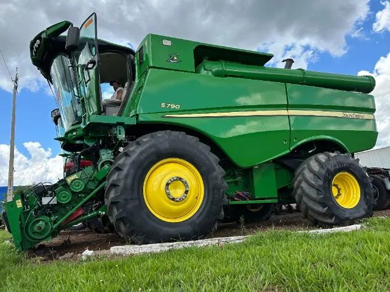

Características Principais
- Motor: Motor PowerTech™ PSS de 9,0 litros e 400 cv para excelente desempenho e economia de combustível.
- Capacidade de Carga: Capacidade de tanque de grãos de até 14.000 litros, permitindo maior autonomia de operação.
- Comando Inteligente: Sistema de comando eletrônico que otimiza a performance da máquina para diferentes tipos de terreno e condições de colheita.
- Facilidade de Operação: Sistema AutoTrac™ para direção automática, garantindo precisão e redução da sobreposição de passes.
- Conforto: Cabine espaçosa com visibilidade aprimorada, ar-condicionado e controles ergonômicos, proporcionando conforto ao operador.
- Eficiência na Limpeza: Sistema de limpeza de alta capacidade com ventilação variável para garantir a qualidade do grão colhido.

Vantagens da Colheitadeira S790
- Alta Performance: Maior produtividade por hora, mesmo em terrenos desafiadores.
- Redução de Perdas: Tecnologia de monitoramento para reduzir as perdas de grãos durante a colheita.
- Menor Custo Operacional: Eficiência no consumo de combustível e manutenção simplificada.
Especificações Técnicas
- Modelo: S790
- Tipo de Motor: PowerTech™ PSS, 6 cilindros
- Potência: 400 cv
- Capacidade do Tanque: 14.000 litros
- Tipo de Transmissão: Hydrostatic Drive (Transmissão Hidrostática)
- Comprimento Total: 12.5 metros
- Peso: Aproximadamente 22.000 kg